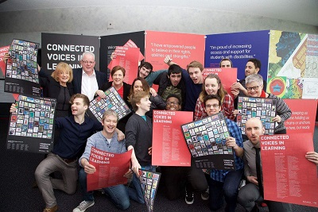
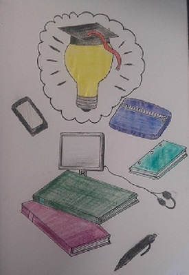
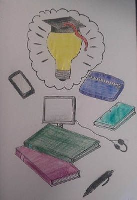
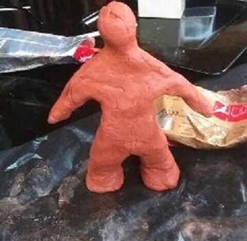

Welcome to My Porfolio Webpage
UDL Conference
This Stamp Design project was completed as part of the module, Universal Design. The theme of this project was based around the concept of equal education for all with a historical underlining. The final stamps were submitted and display at Universal Design for Learning Symposium 2016. These stamps were also used as part of of a workshop organised by a member of Ahead.
Stamp Design


These stamps were designed by hand and scanned to be submitted in PDF format. When creating these stamps, I used a number of historical educational symbols mixed together with current items used in education today. My aim was to use this contrast in order to show how education has developed throughout the course of history.
The final selection of stamps were displayed at this conference. These were displayed along with a poem written by Colm Keegan about the lives of college students.
Poster Final Design
 

This is my poster design created using Adobe Illustrator CC. The theme behind this idea originates around lecture theatres. The design was hand drawn and scanned into Illustrator. The design was created in Illustrator using the pen tool primarily. The final product is to be displayed on the wall of a lecture theatre within The D block of ITB.
Normals Creations
This task required students to create 3D models of the normals from the video "Meet The Normals - Adventures in Universal Design". The aim was to create these characters in order to promote the idea of universal design and how it this concept is critical factor in the world of design.